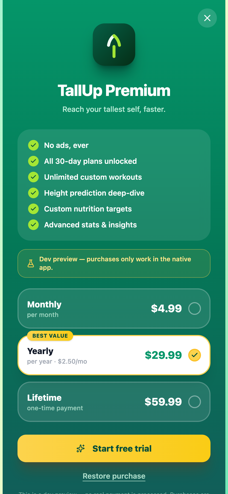
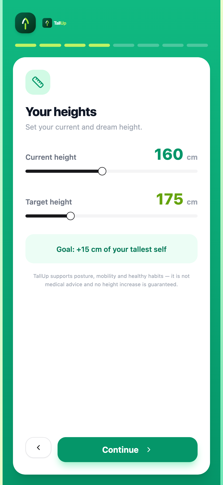

Everything you need to grow
TallUp turns stretching, posture, sleep and nutrition into one simple daily habit — about 10 minutes a day, guided from start to finish.
Launching soon on iOS and Android.





A closer look at TallUp
Every screen is built around one goal: making a healthy daily routine easy to start and hard to break.
Today's guided workout, ready to go
A 30-day guided plan
No guesswork, no planning. Open the app and today's session is waiting — one guided workout per day, about 10 minutes, built around 12 spine-friendly stretches and posture exercises.
- One workout per day, ~10 minutes
- 12 spine-friendly exercises, rotated over 30 days
- Rest days and sensible progression built in
Follow along with the built-in timer
A guided player that keeps pace
Each exercise plays with clear instructions and a countdown timer, so you can focus on form instead of watching the clock. Move through the session at your own rhythm — pause or skip anytime.
- Step-by-step guidance for every exercise
- Automatic timers for holds and reps
- Pause, skip, or replay any step
Your custom session, guided end to end
Custom workouts & 3 difficulty levels
Start where you're comfortable. Every exercise comes in three difficulty levels, and Premium lets you build your own custom workouts from the full exercise library — perfect for targeting posture or mobility goals.
- Beginner, intermediate and advanced levels
- Build custom workouts from the full library (Premium)
- Mix stretches, posture and mobility work your way
Your personal adult-height estimate
Adult-height estimate
Curious how tall you might end up? TallUp computes a personal adult-height estimate from your age, current height and your parents' heights, and updates it as you grow.
- Based on age, height and parents' heights
- Updates with every height check-in
- A fun way to follow your growth journey
Estimates only, based on population growth statistics — not medical advice.
Check-ins charted over time
Height check-ins & trends
Log your height in seconds and watch your trend line grow. Regular check-ins turn slow progress into a chart you can actually see — and keep your estimate up to date.
- Quick height check-ins anytime
- Trend chart across weeks and months
- Estimates only, based on population growth statistics — not medical advice.
Badges for every milestone
Streaks & achievements
Motivation that lasts longer than a week. Build a daily streak, unlock badges for milestones, and celebrate every completed week of your plan.
- Daily streak counter on your home screen
- Achievement badges for workouts, check-ins and more
- Gentle nudges to keep the streak alive
Log sleep against the 8–10 hour goal
Sleep tracking
Growth happens while you sleep. Log your nights against the 8–10 hour goal for teens and young adults, and spot the patterns that affect how you feel — and how you stand.
- Simple nightly sleep logging
- 8–10 hour goal tracking
- See your week at a glance
Meal ideas tuned to growing bodies
Daily meal ideas & nutrients
Fuel the habit. Get daily meal ideas focused on the nutrients that matter most for growing bodies — protein, calcium, vitamin D, zinc and magnesium — without complicated calorie counting.
- Fresh meal ideas every day
- Focus on protein, calcium, vitamin D, zinc, magnesium
- Simple logging, no diet plans
Unlock the full library with Premium
Premium, when you're ready
The free plan covers your daily workout, height estimate and basic tracking. Premium unlocks the full exercise library, custom workouts and advanced stats for deeper insight into your routine.
- Full exercise library and custom workouts
- Advanced stats and deeper trends
- See current pricing in the app.
Set up in about two minutes
Onboarding in 2 minutes
No account required. Answer a few quick questions — age, height, parents' heights — and your first workout and personal estimate are ready. TallUp is local-first and works offline, so your data stays on your device.
- Optional account — start instantly
- Works offline, local-first storage
- First workout ready on day one
Free vs Premium
Start free with the daily essentials. Upgrade anytime for the full library and deeper stats — see current pricing in the app.
| Feature | Free | Premium |
|---|---|---|
| Daily guided workout (30-day plan) | ||
| Exercise library | Core 12 exercises | Full library |
| Custom workouts | — | |
| Adult-height estimate | ||
| Sleep & nutrition tracking | Basic logging | Full history |
| Streaks & achievements | ||
| Advanced stats & trends | — | |
| Offline use, local-first data |
See current pricing in the app. Estimates only, based on population growth statistics — not medical advice.